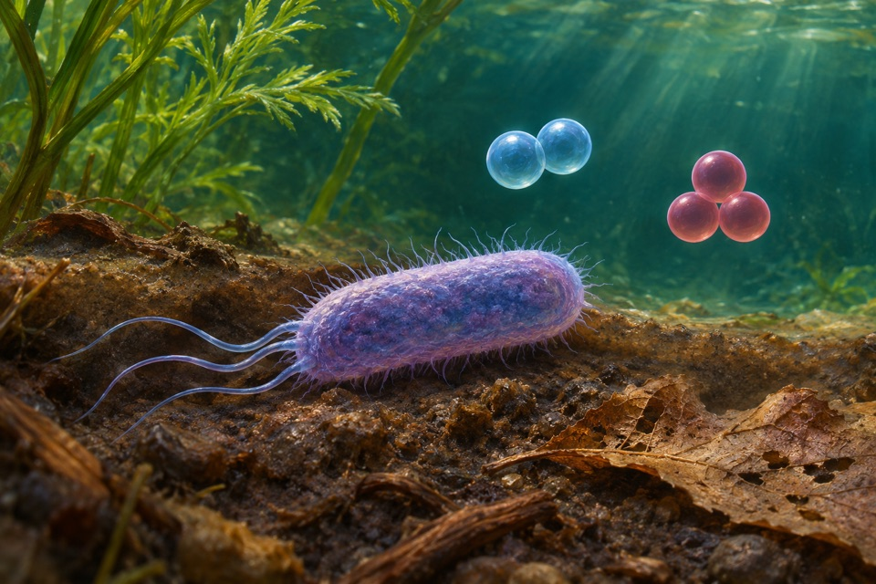
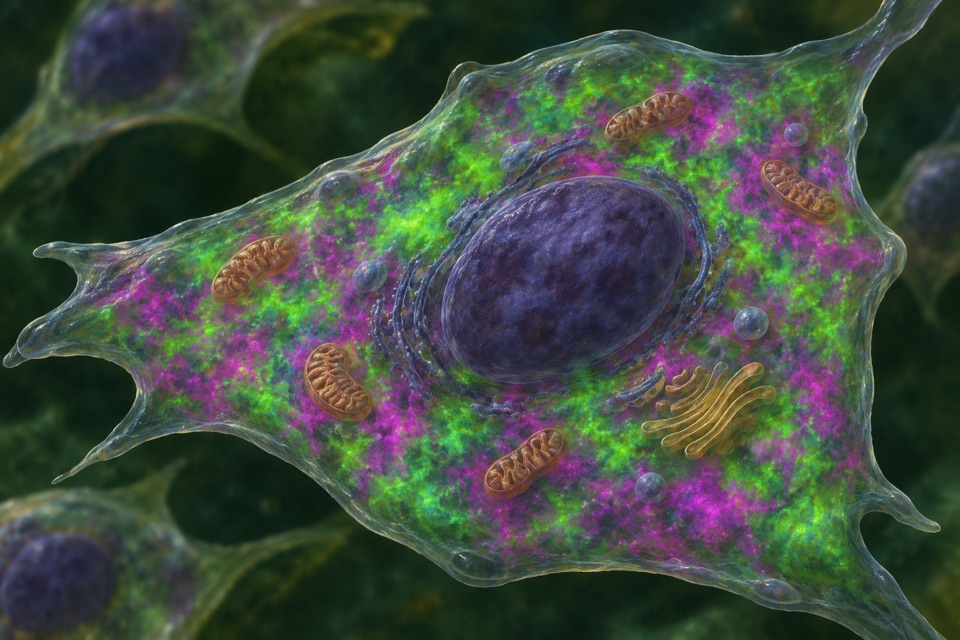
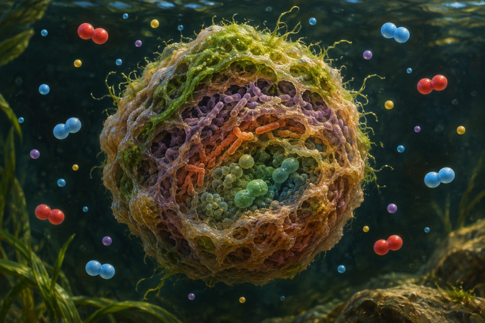
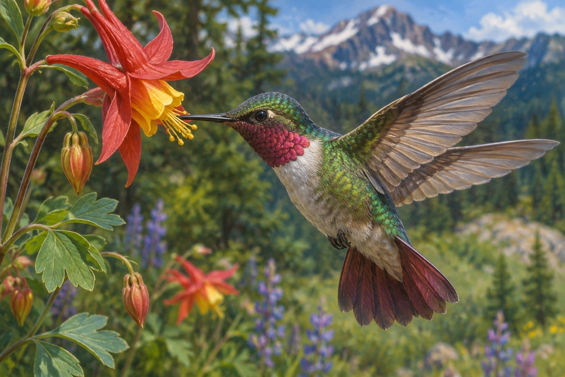
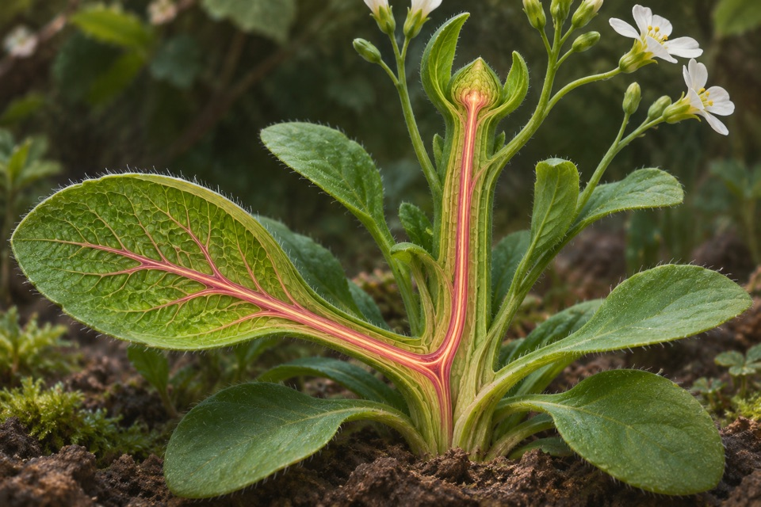
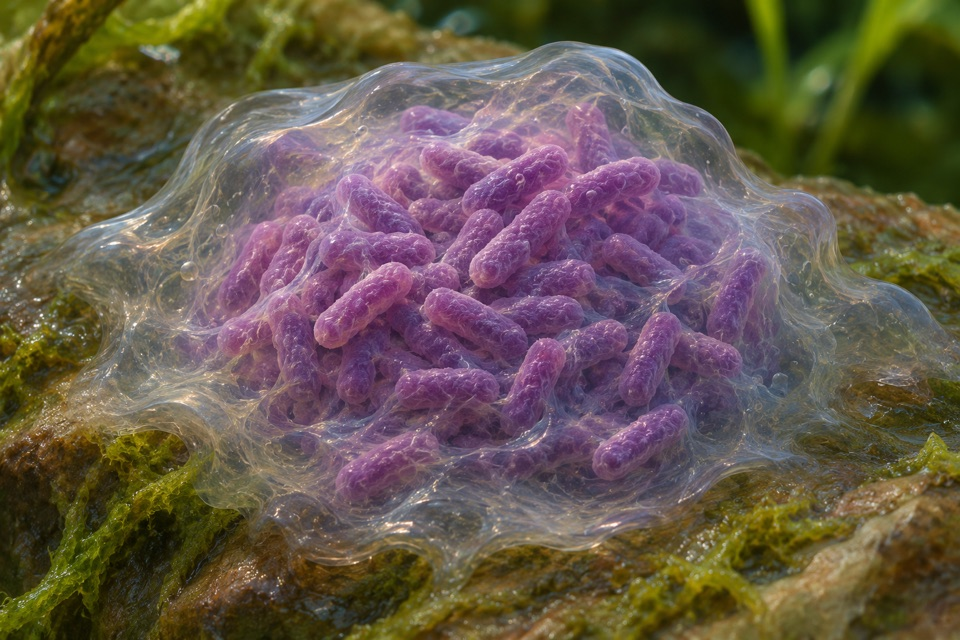

Module 01
Blue-light activation of a plant phototropin
Measure blue-light-dependent receptor phosphorylation and distinguish it from bending of the organ.
Evidence recordOpen any of the ten modules to see the reported observation, its sources, and the research questions still open.
Measure blue-light-dependent receptor phosphorylation and distinguish it from bending of the organ.
Evidence record
Determine whether nitrous oxide is consumed and dinitrogen produced in the defined respiratory system.
Evidence record
Measure relative cytosolic NADH:NAD⁺ state in living cells.
Evidence record
Measure hemoglobin oxygen affinity under matched conditions.
Evidence recordQuantify hypocotyl elongation under a low red-to-far-red cue and separate it from directional phototropism.
Evidence record
Assess ammonium and nitrite turnover with dinitrogen as the main nitrogen product.
Evidence record
Measure dynamic, compartment-specific glutathione redox changes.
Evidence record
Measure the share of oxidized substrate attributable to a recent meal.
Evidence record
Track movement of FT protein from leaf vascular tissue and distinguish it from floral induction as a downstream outcome.
Evidence record
Measure extracellular alginate production and confirm polymer identity.
Evidence record